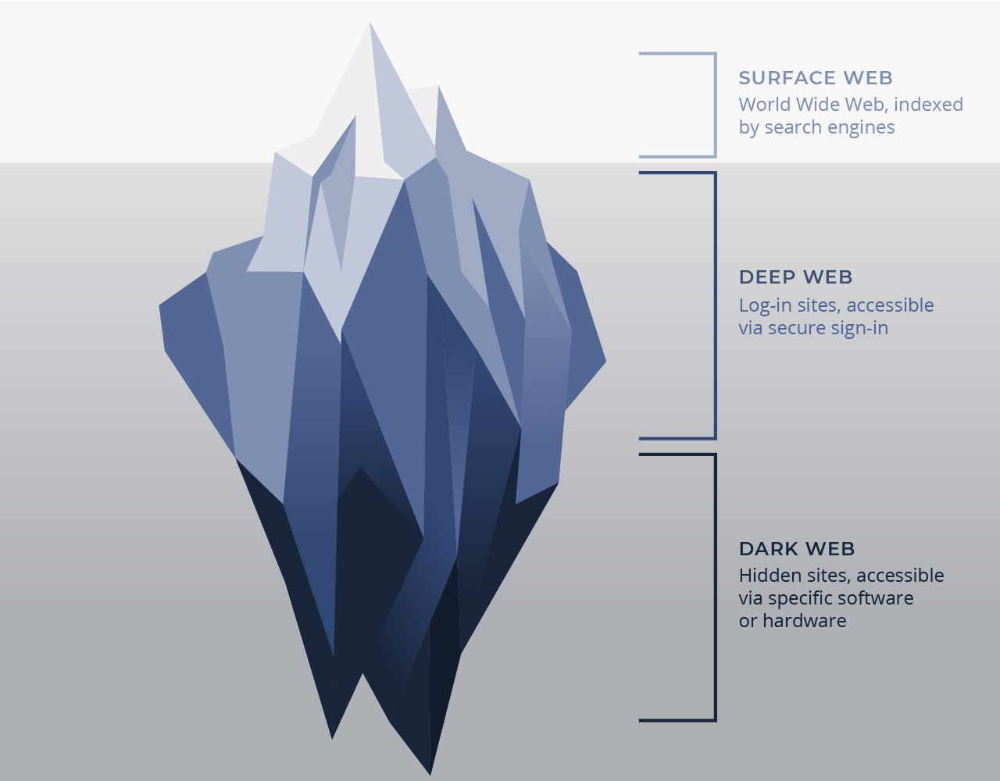

The Hidden Services: TOR Network’s real deal
Hidden services also known as the Dark Web is too cool to exist. As discussed in the last article, the TOR network is a pretty secure network of onion routers. However, we also discussed how if you place yourself at the right places in the network, you can get a lot of information and sometimes even everything. Hidden Services come for the rescue! Servers in the usual system of networks are visible to the world. The whole world knows where www.google.com is, which is fine by google. It wants people to know where it is. However, what if YOU don’t want your website’s location to be known * raises eyebrows *. Now we’re talking hidden services. Services which are hidden. Services away from the reach of anyone accept the people you allow. Of course, shady services like these come with complications.
Dark VS Deep Web

We’ve heard how 95% of the whole internet are deep web and dark web websites. As ominous as it sounds, that is actually quite reasonable and just common sense if you know what exactly the deep web is. The surface web is where google is. Recently, google indexed its 1 trillionth page on its site. Congratulations to google on that, but if google is surface web and google has 1 trillion websites, how many freaking websites are there in the deep web? Calculate that yourself and it’s a gigantic number. Everything not on google is the deep web. These are personal information which should just not be available on google. For example, if you have a private Facebook account, you must have a Facebook page only visible to your friends so that page is not supposed to be indexed by google. These “deep web” sites also include bank pages and millions of other pages on websites which are supposed to be public. It’s just common sense that that must be a huge number.
Websites have a file named robots.txt which is read by search engines like google to know what pages are disallowed for everyone to see or at least for google to see. My website has one too, try typing unsolicitedsite.co.in/robots.txt to access it, though you might not be amazed. (Don’t try this on other sites, many sites don’t want you to see what they don’t want you to see, mind your own business or get some help).
The Dark Web on the other hand is a collection of rare websites on anonymous networks like TOR. And yes, that anonymity can be used by criminals just as well as good people.
Hidden Services OR the Dark Web

What we call the Dark Web and associate dark, scary things with is actually known as Hidden Services. Hidden Services are of many types and are on many networks you can even create your own. However, we are talking about TOR hidden services, the most popular ones. Remember onion routing from here? These websites use onion encryption and the onion routing protocol to make a system which is mind-blowingly secure and anonymous. Spot a website ending with .onion, you have spotted an onion site or a Dark Web site or a hidden service.
The problem with onion routing as you must remember was that the exit node was vulnerable. The server which you were trying to reach was public, everyone knew where it was so it was easy to find that last node or the exit node. If, somehow, we could make the server private or “hidden” then we might be on to something.

What happens to hidden services is that they are simply shifted from being outside the tor network to being INSIDE it. Bear with me.
Hiding a service
You can get your own .onion URL, did you know? It’s not illegal and it shouldn’t be ever illegal. We use the NGINX for hosting our .onion websites and NGINX is amazing. However, we are not going to talk about that. We are exploring how actually you can talk to a server which is just one of the many onion routers inside the network. I bet people were watching some mission impossible movie while making this algorithm.
You fire up your tor browser and type in your favourite .onion site (psst… http://wikitjerrta4qgz4.onion/ is one of my favourites ). While most sites are hidden between all the onion routers, some sites which don’t wish to be hidden are publicly available yet they have an onion address (like facebookcorewwwi.onion). These sites are faster to surf and skip a few steps in the routing process. We don’t want that, we want full anonymity.
The onion site you open is one of the onion routers as established before. You, first, decide upon a common place, a rendezvous point. This point is where you two are supposed to meet like some spies in a movie. But you might ask, how would you give this rendezvous address to the server? The onion site picks some onion routers at random and makes them ‘introduction points’. Introduction Points have no idea where the server of the site it, because the server uses complete tor circuits to connect to the randomly chosen IP [Introduction Points]. This is the place where you want to come to give the address of the rendezvous point so you can talk to the website. Becoming an introduction point is easy and does not require a lot of bandwidth so most routers can do it.
.jpg)
First of all, you want to sit there at your RP [Rendezvous Point] and wait for the server. You also want to send the location of your RP and ask the server to come meet you there. So, you set sail, with complete tor circuits (I have talked about tor circuits here) to reach one of the IP or introduction points. The introduction points are connected to the hidden server when you reach there at the IP, you tell it to ask the server to meet you at [THIS SECRET LOCATION] which is your rendezvous point. You also give the introduction point a secret one-time password, something like ‘password123’ to let you know that it’s only the server who’s talking. This protocol really uses a password, and no this is not a movie again (of course the password is much more complicated to figure out).
The introduction point takes your request and passes it on to the server, again, with tor circuits (around 6 tor circuits are used in just connecting to a hidden service). The server can then decide. It can decide to talk to you if you are cool enough or it can reject your request so your browser just sits their loading and loading and loading until you get a connection time-out message, quite mean of the server. The server won’t send you a signal if it refuses because it doesn’t want you to know its location, you FBI spy. If it does accept your request, it will take your password and address (of the rendezvous point) and reach the secret place with the resources it has. It would say “Hey, pizza delivery. Just kidding we are the secret service you ordered for. Password123.”. You will squint your eyes in suspicion and then look at the code and then you’ll allow because everyone loves pizza. Note: once the introduction point introduces the server to you, it’s pretty much useless and everyone just ignores it until someone else wants access to the site of course (Tor network is cruel place, people).
That’s it. If you actually understood what just happened then enjoy the criminality on the tor network. NO! DON’T. Any criminality on the tor network is not legal. If you spot anything, look for the country the hidden service is from and report it to the country if you can immediately and also GET OFF THAT SITE. However, if you’re using it for just anonymity on the internet or just a cool new way to talk to your friends or just to be in a spy movie for ONCE, go ahead the tor network is all yours.
Hidden Services: The ultimate privacy solution?
YES! Hidden services can provide a level of privacy which is out of this world. It solves the sniffing at the exit node problem, it keeps the server safe and protected, it keeps the user(you) safe and protected. It allows you to back off the network whenever you feel like. It gives you control over your privacy which cannot be factually said in the world we live in today. Companies and governments are always on the watch. They want your information for advertisements, to manipulate your vote, to even change your opinions. This has to stop. The internet was created as a place of information interchange and it has turned into a huge mess of data worth millions of dollars. Watch out. However, is this level of encryption and anonymity really worth all the criminality under the hood of the dark web?